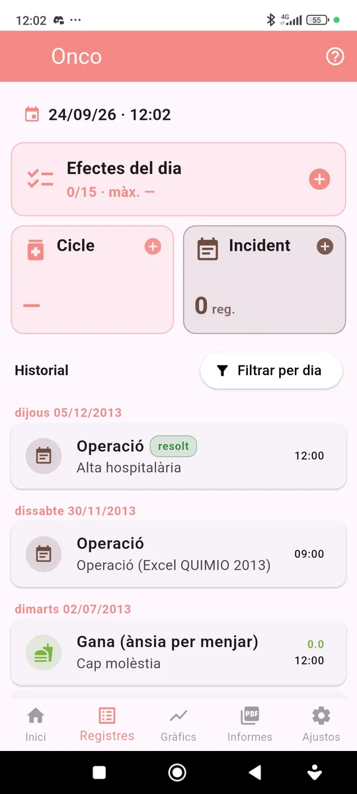
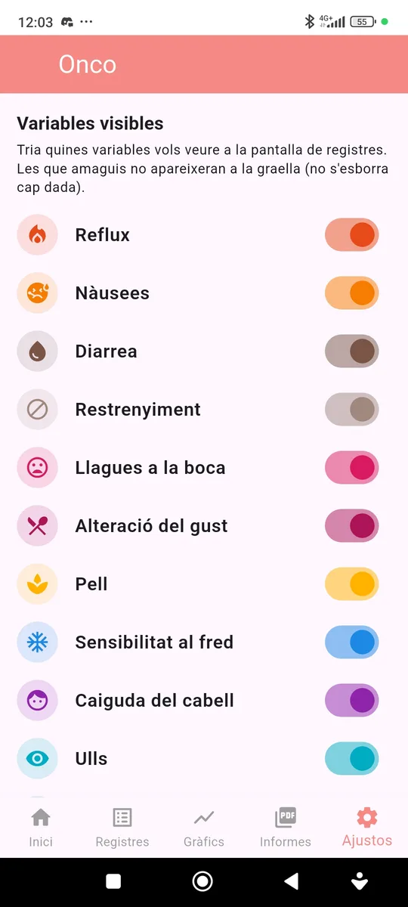
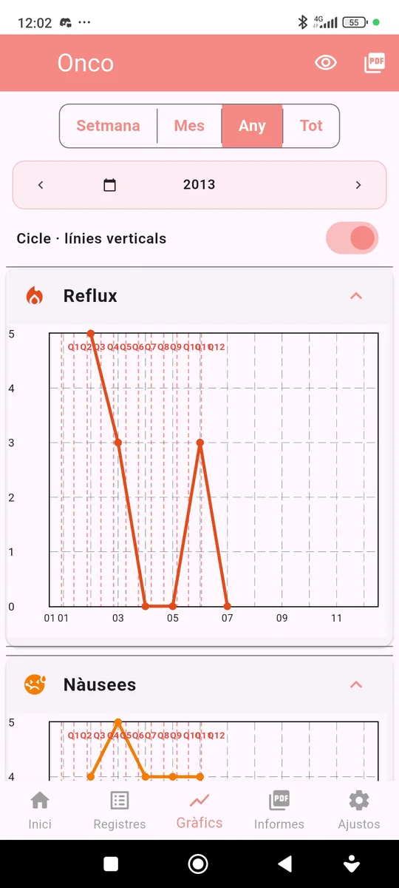
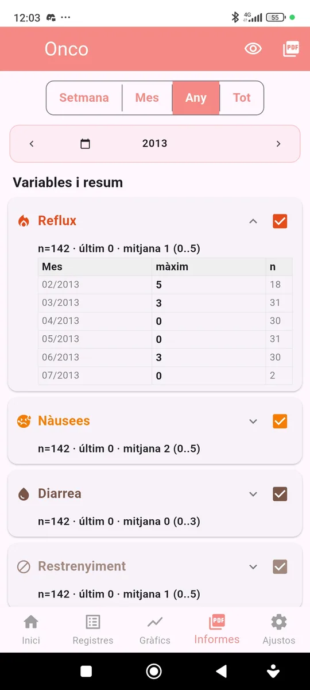

Mòdul Onco
Manual de seguiment oncològic
Guia pràctica per registrar cada dia els efectes secundaris del tractament i veure com evolucionen al llarg dels cicles.

Objectiu
Aquest mòdul ajuda a registrar de manera senzilla els efectes secundaris d’un tractament oncològic (per exemple, quimioteràpia), puntuant cada efecte de 0 a 5.
Com fer un registre
1. Efectes del dia
Prem Efectes del dia per obrir el full diari: hi apareixen tots els efectes actius, agrupats (digestiu, pell, mucoses, psicofísic…). Per a cada efecte tria el nivell de 0 a 5 llegint la definició de cada nivell.
La targeta mostra quants efectes has puntuat aquell dia i el valor màxim.
2. Cicle de tractament
Registra el número de Cicle el dia que comença cada cicle (per exemple, el dia de la infusió). Els cicles es mostren com a línies verticals als gràfics i ajuden a veure en quins dies després del tractament apareixen els efectes.
3. Incidents i historial
Amb Incident pots anotar fets importants (una operació, un ingrés, una febre…) amb una etiqueta, una severitat i una nota. Pots marcar-lo com a resolt quan s’acabi l’episodi.
L’historial mostra tots els registres per dies; prem-ne un per modificar-lo o eliminar-lo.
Configuració

Efectes visibles
A Ajustos pots activar o desactivar cada efecte segons el teu tractament. Amagar un efecte no esborra cap dada.
Gràfics

Evolució de cada efecte
Cada efecte té el seu gràfic de 0 a 5. Pots triar el període (setmana, mes, any o tot) i activar les línies verticals de cicle per veure l’evolució dins de cada cicle. Amb la icona PDF pots exportar els gràfics.
Informes

Resum i matriu d’efectes
A l’informe pots veure, per a cada efecte, el nombre de registres, el darrer valor i la mitjana, i una taula amb el valor màxim per mes o per dia.
El PDF inclou una taula de dies × efectes que permet veure d’un cop d’ull quan apareix cada efecte dins del cicle.